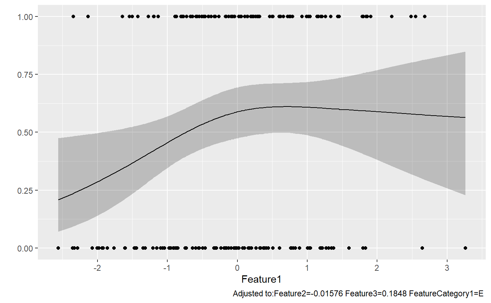
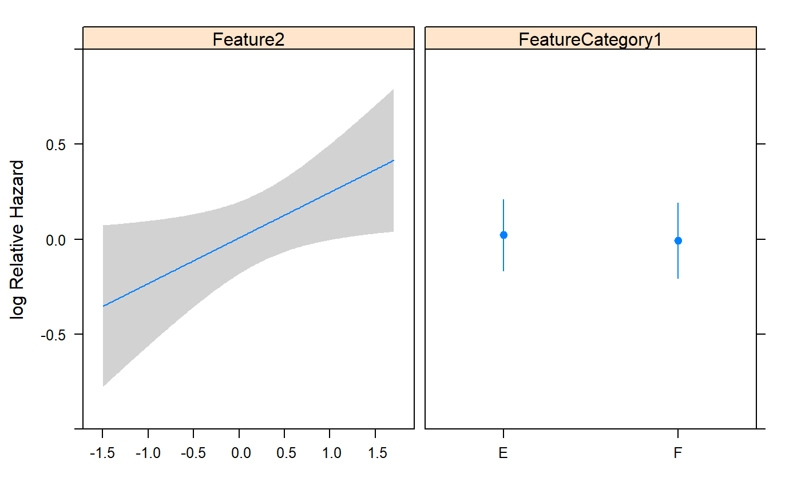

Statistic Methods Example
Shilin Zhao
26 February, 2020
EasierStatisticModels.RmdFunctions and packages
## Warning: package 'knitr' was built under R version 3.6.1## Warning: package 'ggplot2' was built under R version 3.6.2## Warning: package 'reshape2' was built under R version 3.6.1## Warning: package 'formattable' was built under R version 3.6.1## Warning: package 'rms' was built under R version 3.6.1## Loading required package: Hmisc## Warning: package 'Hmisc' was built under R version 3.6.1## Loading required package: lattice## Loading required package: survival## Loading required package: Formula##
## Attaching package: 'Hmisc'## The following objects are masked from 'package:base':
##
## format.pval, units## Loading required package: SparseM##
## Attaching package: 'SparseM'## The following object is masked from 'package:base':
##
## backsolve## Warning: package 'htmlTable' was built under R version 3.6.1## Loading required package: data.table## Warning: package 'data.table' was built under R version 3.6.1##
## Attaching package: 'data.table'## The following objects are masked from 'package:reshape2':
##
## dcast, melt## Loading required package: VariantAnnotation## Loading required package: BiocGenerics## Loading required package: parallel##
## Attaching package: 'BiocGenerics'## The following objects are masked from 'package:parallel':
##
## clusterApply, clusterApplyLB, clusterCall, clusterEvalQ, clusterExport, clusterMap, parApply, parCapply, parLapply, parLapplyLB, parRapply, parSapply, parSapplyLB## The following object is masked from 'package:formattable':
##
## normalize## The following objects are masked from 'package:stats':
##
## IQR, mad, sd, var, xtabs## The following objects are masked from 'package:base':
##
## anyDuplicated, append, as.data.frame, basename, cbind, colnames, dirname, do.call, duplicated, eval, evalq, Filter, Find, get, grep, grepl, intersect, is.unsorted, lapply, Map, mapply, match, mget, order, paste, pmax, pmax.int, pmin, pmin.int, Position, rank, rbind, Reduce, rownames, sapply, setdiff, sort, table, tapply, union, unique, unsplit, which, which.max, which.min## Loading required package: GenomeInfoDb## Loading required package: S4Vectors## Loading required package: stats4##
## Attaching package: 'S4Vectors'## The following objects are masked from 'package:data.table':
##
## first, second## The following object is masked from 'package:base':
##
## expand.grid## Loading required package: IRanges##
## Attaching package: 'IRanges'## The following object is masked from 'package:data.table':
##
## shift## The following object is masked from 'package:grDevices':
##
## windows## Loading required package: GenomicRanges## Loading required package: SummarizedExperiment## Loading required package: Biobase## Welcome to Bioconductor
##
## Vignettes contain introductory material; view with 'browseVignettes()'. To cite Bioconductor, see 'citation("Biobase")', and for packages 'citation("pkgname")'.##
## Attaching package: 'Biobase'## The following object is masked from 'package:Hmisc':
##
## contents## Loading required package: DelayedArray## Loading required package: matrixStats## Warning: package 'matrixStats' was built under R version 3.6.1##
## Attaching package: 'matrixStats'## The following objects are masked from 'package:Biobase':
##
## anyMissing, rowMedians## Loading required package: BiocParallel##
## Attaching package: 'DelayedArray'## The following objects are masked from 'package:matrixStats':
##
## colMaxs, colMins, colRanges, rowMaxs, rowMins, rowRanges## The following objects are masked from 'package:base':
##
## aperm, apply, rowsum## Loading required package: Rsamtools## Loading required package: Biostrings## Loading required package: XVector##
## Attaching package: 'Biostrings'## The following object is masked from 'package:DelayedArray':
##
## type## The following objects are masked from 'package:Hmisc':
##
## mask, translate## The following object is masked from 'package:base':
##
## strsplit##
## Attaching package: 'VariantAnnotation'## The following object is masked from 'package:base':
##
## tabulateMake Data
rawData<-matrix(nrow=200,ncol=10,rnorm(200*10))
row.names(rawData)<-paste0("Sample",1:200)
colnames(rawData)<-paste0("Feature",1:10)
rawData<-data.frame(rawData,FeatureYN1=sample(c(0,1),200,replace = TRUE),FeatureCategory1=sample(c("F","E"),200,replace = TRUE),FeatureCategory2=sample(c("A","B","C","D"),200,replace = TRUE),stringsAsFactors = TRUE)
#make data with missing values
rawDataWithMissing<-rawData
set.seed(123)
temp1<-sample(1:ncol(rawDataWithMissing),200,replace=TRUE)
temp2<-sample(1:nrow(rawDataWithMissing),200,replace=TRUE)
for (i in 1:length(temp1)) {
rawDataWithMissing[temp2[i],temp1[i]]<-NA
}Notes
#Making formula. Using () to print at the same time
#(formulaForModel<-as.formula(paste0(outVar,"~",paste(varForTable1, collapse=" + "))))##Logistic regression: Model, Table, and Figure
Model and Table
outVar="FeatureYN1"
varForTable=c("Feature1", "Feature2","Feature3","FeatureCategory1")
nonLinearTest(rawData,outVar,varForTable,modelType ="lrm",returnKable=TRUE)| Outcome | X | Formula | P (Variable) | P ( Nonlinear) | P (TOTAL) |
|---|---|---|---|---|---|
| FeatureYN1 | Feature1 | FeatureYN1 ~ rcs(Feature1, 3) | 0.044 | 0.127 | 0.044 |
| FeatureYN1 | Feature2 | FeatureYN1 ~ rcs(Feature2, 3) | 0.133 | 0.119 | 0.133 |
| FeatureYN1 | Feature3 | FeatureYN1 ~ rcs(Feature3, 3) | 0.881 | 0.649 | 0.881 |
modelTable(rawData,outVars="FeatureYN1",interestedVars=list(c("Feature1"),c("Feature2","FeatureCategory1")),adjVars="Feature3") Formula Event InterestedVar Effect (One Unit) P Odds Ratio (One Unit) OR (Lower 95%) OR (Upper 95%) Value (25% Quantile) Value (75% Quantile) Value Diff (75%-25%) Odds Ratio (Diff: 75%-25%) OR (Diff, Lower 95%) OR (Diff, Upper 95%)1 lrm (FeatureYN1 ~ Feature1 + Feature3) 1(100) : 0(100) Feature1 0.277 0.0391 1.319 1.014 1.716 -0.771 0.744 1.516 1.521 1.021 2.267 2 lrm (FeatureYN1 ~ Feature2 + FeatureCategory1 + Feature3) 1(100) : 0(100) Feature2 -0.212 0.1722 0.809 0.597 1.097 -0.599 0.66 1.259 0.766 0.522 1.123 3 lrm (FeatureYN1 ~ Feature2 + FeatureCategory1 + Feature3) 1(100) : 0(100) FeatureCategory1 - F:E -0.265 0.3549 0.767 0.437 1.346
modelTable(rawData,outVars="FeatureYN1",interestedVars=c("Feature1","Feature2","FeatureCategory1"),adjVars="Feature3") Formula Event InterestedVar Effect (One Unit) P Odds Ratio (One Unit) OR (Lower 95%) OR (Upper 95%) Value (25% Quantile) Value (75% Quantile) Value Diff (75%-25%) Odds Ratio (Diff: 75%-25%) OR (Diff, Lower 95%) OR (Diff, Upper 95%)1 lrm (FeatureYN1 ~ Feature1 + Feature3) 1(100) : 0(100) Feature1 0.277 0.0391 1.319 1.014 1.716 -0.771 0.744 1.516 1.521 1.021 2.267 2 lrm (FeatureYN1 ~ Feature2 + Feature3) 1(100) : 0(100) Feature2 -0.204 0.1867 0.815 0.602 1.104 -0.599 0.66 1.259 0.773 0.528 1.132 3 lrm (FeatureYN1 ~ FeatureCategory1 + Feature3) 1(100) : 0(100) FeatureCategory1 - F:E -0.244 0.3922 0.784 0.448 1.370
Figure
outVar="FeatureYN1"
varForTable=c("Feature1", "Feature2","Feature3","FeatureCategory1")
nonLinearTest(rawData,outVar,varForTable,modelType ="lrm") Outcome X Formula P (Variable) P ( Nonlinear) P (TOTAL)
[1,] "FeatureYN1" "Feature1" "FeatureYN1 ~ rcs(Feature1, 3)" "0.044" "0.127" "0.044"
[2,] "FeatureYN1" "Feature2" "FeatureYN1 ~ rcs(Feature2, 3)" "0.133" "0.119" "0.133"
[3,] "FeatureYN1" "Feature3" "FeatureYN1 ~ rcs(Feature3, 3)" "0.881" "0.649" "0.881" #None of them has non-linear term. But will add nonlinear in the model as an example
#(formulaForModel<-as.formula(paste0(outVar,"~",paste(varForTable, collapse=" + "))))
formulaForModel<-as.formula(FeatureYN1~rcs(Feature1,3)+Feature2+Feature3+FeatureCategory1)
dataForModel<-rawData[,c(outVar,varForTable)]
ddist <- datadist(dataForModel)
options(datadist='ddist')
modelResult <- lrm(formulaForModel, data=rawData)
print(modelResult)Logistic Regression Model
lrm(formula = formulaForModel, data = rawData)
Model Likelihood Discrimination Rank Discrim.
Ratio Test Indexes Indexes
Obs 200 LR chi2 10.06 R2 0.065 C 0.600
0 100 d.f. 5 g 0.508 Dxy 0.199
1 100 Pr(> chi2) 0.0737 gr 1.662 gamma 0.199
max |deriv| 1e-12 gp 0.120 tau-a 0.100
Brier 0.238
Coef S.E. Wald Z Pr(>|Z|)
Intercept 0.5604 0.3297 1.70 0.0892
Feature1 0.7432 0.3274 2.27 0.0232
Feature1' -0.5401 0.3520 -1.53 0.1250
Feature2 -0.2257 0.1574 -1.43 0.1514
Feature3 0.0406 0.1512 0.27 0.7885
FeatureCategory1=F -0.3259 0.2952 -1.10 0.2696
#extract p value from results
#http://r.789695.n4.nabble.com/Extracting-P-values-from-the-lrm-function-in-the-rms-library-td2260999.html
pnorm(abs(modelResult$coef/sqrt(diag(modelResult$var))),lower.tail=F)*2 Intercept Feature1 Feature1' Feature2 Feature3 FeatureCategory1=F
0.08917042 0.02318681 0.12499723 0.15142348 0.78853165 0.26959283 

Classes 'Predict' and 'data.frame': 200 obs. of 7 variables:
$ Feature1 : num -2.56 -2.36 -2.35 -2.33 -2.28 ...
$ Feature2 : num -0.0158 -0.0158 -0.0158 -0.0158 -0.0158 ...
$ Feature3 : num 0.185 0.185 0.185 0.185 0.185 ...
$ FeatureCategory1: Factor w/ 2 levels "E","F": 1 1 1 1 1 1 1 1 1 1 ...
$ yhat : num 0.209 0.235 0.236 0.238 0.245 ...
$ lower : num 0.0714 0.092 0.0932 0.0947 0.1004 ...
$ upper : num 0.475 0.482 0.483 0.483 0.485 ...
- attr(*, "out.attrs")=List of 2
..$ dim : Named int 200 1 1 1
.. ..- attr(*, "names")= chr "Feature1" "Feature2" "Feature3" "FeatureCategory1"
..$ dimnames:List of 4
.. ..$ Feature1 : chr "Feature1=-2.562726" "Feature1=-2.356756" "Feature1=-2.345888" "Feature1=-2.332444" ...
.. ..$ Feature2 : chr "Feature2=-0.01576"
.. ..$ Feature3 : chr "Feature3=0.1848"
.. ..$ FeatureCategory1: chr "FeatureCategory1=E"
- attr(*, "info")=List of 11
..$ varying : chr "Feature1"
..$ adjust : chr "Feature2=-0.01576 Feature3=0.1848 FeatureCategory1=E "
..$ Design :List of 3
.. ..$ label : Named chr "Feature1" "Feature2" "Feature3" "FeatureCategory1"
.. .. ..- attr(*, "names")= chr "Feature1" "Feature2" "Feature3" "FeatureCategory1"
.. ..$ units : Named chr "" "" "" ""
.. .. ..- attr(*, "names")= chr "Feature1" "Feature2" "Feature3" "FeatureCategory1"
.. ..$ assume.code: Named int 4 1 1 5
.. .. ..- attr(*, "names")= chr "Feature1" "Feature2" "Feature3" "FeatureCategory1"
..$ ylabPlotmath: chr ""
..$ ylabhtml : chr ""
..$ ylab : chr ""
..$ yunits : NULL
..$ ref.zero : logi FALSE
..$ adj.zero : logi FALSE
..$ time : NULL
..$ conf.int : num 0.95p=rms:::ggplot.Predict(temp,ylim=c(0,1))
#same thing
#p=ggplot(temp,aes(x=Feature1,y=yhat),ylim=c(0,1))+geom_line()+geom_ribbon(aes(ymin=lower,ymax=upper),alpha=0.05)
p+geom_point(aes(x=Feature1,y=FeatureYN1),data=dataForModel)
##Logistic regression: ROC curve and best cutoff
Simple one variable model
https://stackoverflow.com/questions/16347507/obtaining-threshold-values-from-a-roc-curve
Or using OptimalCutpoints package which provides many algorithms to find an optimal thresholds. Or coords function in pROC package
source("D:\\source\\r_cqs\\myPkg\\R\\logisticRegressionAndRocFunctions.R")
dataForModel=rawData
temp=makeModelAndTable(dataForModel,labelVar="FeatureYN1",xVar="Feature1")| cut | sens | spec | ppv | npv |
|---|---|---|---|---|
| -1.44327239102318 | 0.95 | 0.15 | 0.5300000 | 0.7500000 |
| -0.771357770606852 | 0.83 | 0.33 | 0.5500000 | 0.6600000 |
| -0.0396971579882457 | 0.53 | 0.53 | 0.5300000 | 0.5300000 |
| 0.744156606775947 | 0.26 | 0.76 | 0.5200000 | 0.5100000 |
| 1.31169924528837 | 0.13 | 0.93 | 0.6500000 | 0.5200000 |
| Max (Sens+Spec): -0.803291122937887 | 0.86 | 0.33 | 0.5620915 | 0.7021277 |
| Max Spec when Sens>=0.8: -0.667217415388882 | 0.80 | 0.35 | 0.5517241 | 0.6363636 |
Complicated Model
source("D:\\source\\r_cqs\\myPkg\\R\\logisticRegressionAndRocFunctions.R")
otherVar=c("FeatureYN1")
xVarList<-list(
"Feature1",
c("Feature2","FeatureCategory1")
)
otherVar=c("Feature3") #like age and gender
plotModelRocAdjusted(dataForModel,
xVarList=xVarList,outVar=outVar,otherVar=otherVar,
verbose=TRUE)## Logistic Regression Model
##
## lrm(formula = formulaForModel, data = dataForModel, x = TRUE,
## y = TRUE)
##
## Model Likelihood Discrimination Rank Discrim.
## Ratio Test Indexes Indexes
## Obs 200 LR chi2 4.45 R2 0.029 C 0.582
## 0 100 d.f. 2 g 0.343 Dxy 0.163
## 1 100 Pr(> chi2) 0.1083 gr 1.409 gamma 0.163
## max |deriv| 1e-09 gp 0.084 tau-a 0.082
## Brier 0.244
##
## Coef S.E. Wald Z Pr(>|Z|)
## Intercept 0.0064 0.1439 0.04 0.9647
## Feature1 0.2769 0.1342 2.06 0.0391
## Feature3 0.0257 0.1491 0.17 0.8632
## ## Setting levels: control = 0, case = 1## Setting direction: controls < cases## Logistic Regression Model
##
## lrm(formula = formulaForModel, data = dataForModel, x = TRUE,
## y = TRUE)
##
## Model Likelihood Discrimination Rank Discrim.
## Ratio Test Indexes Indexes
## Obs 200 LR chi2 2.67 R2 0.018 C 0.555
## 0 100 d.f. 3 g 0.264 Dxy 0.109
## 1 100 Pr(> chi2) 0.4453 gr 1.303 gamma 0.109
## max |deriv| 2e-11 gp 0.065 tau-a 0.055
## Brier 0.247
##
## Coef S.E. Wald Z Pr(>|Z|)
## Intercept 0.1075 0.1923 0.56 0.5763
## Feature2 -0.2120 0.1553 -1.37 0.1722
## FeatureCategory1=F -0.2653 0.2868 -0.93 0.3549
## Feature3 0.0247 0.1487 0.17 0.8681
## ## Setting levels: control = 0, case = 1
## Setting direction: controls < cases## Logistic Regression Model
##
## lrm(formula = formulaForModel, data = dataForModel, x = TRUE,
## y = TRUE)
##
## Model Likelihood Discrimination Rank Discrim.
## Ratio Test Indexes Indexes
## Obs 200 LR chi2 7.65 R2 0.050 C 0.599
## 0 100 d.f. 4 g 0.453 Dxy 0.198
## 1 100 Pr(> chi2) 0.1052 gr 1.573 gamma 0.198
## max |deriv| 8e-08 gp 0.109 tau-a 0.099
## Brier 0.241
##
## Coef S.E. Wald Z Pr(>|Z|)
## Intercept 0.1552 0.1961 0.79 0.4288
## Feature1 0.3006 0.1376 2.19 0.0289
## Feature2 -0.2181 0.1568 -1.39 0.1643
## FeatureCategory1=F -0.3481 0.2935 -1.19 0.2357
## Feature3 0.0181 0.1501 0.12 0.9039
## ## Setting levels: control = 0, case = 1
## Setting direction: controls < cases## Warning in coords.roc(resultRoc[[length(resultRoc)]], "best"): An upcoming version of pROC will set the 'transpose' argument to FALSE by default. Set transpose = TRUE explicitly to keep the current behavior, or transpose = FALSE to adopt the new one and silence this warning. Type help(coords_transpose) for additional information.## Confusion Matrix and Statistics
##
## Reference
## Prediction 0 1
## 0 22 4
## 1 78 96
##
## Accuracy : 0.59
## 95% CI : (0.5184, 0.6589)
## No Information Rate : 0.5
## P-Value [Acc > NIR] : 0.006565
##
## Kappa : 0.18
##
## Mcnemar's Test P-Value : 7.536e-16
##
## Sensitivity : 0.9600
## Specificity : 0.2200
## Pos Pred Value : 0.5517
## Neg Pred Value : 0.8462
## Prevalence : 0.5000
## Detection Rate : 0.4800
## Detection Prevalence : 0.8700
## Balanced Accuracy : 0.5900
##
## 'Positive' Class : 1
## Linear regression
outVar="Feature1"
varForTable=c("FeatureYN1", "Feature2","Feature3","FeatureCategory1")
nonLinearTest(rawData,outVar,varForTable,modelType ="ols") Outcome X Formula P (Variable) P ( Nonlinear) P (TOTAL)
[1,] "Feature1" "Feature2" "Feature1 ~ rcs(Feature2, 3)" "0.624" "0.332" "0.624"
[2,] "Feature1" "Feature3" "Feature1 ~ rcs(Feature3, 3)" "0.578" "0.318" "0.578" modelTable(rawData,outVars="Feature1",interestedVars=list(c("FeatureYN1"),c("Feature2","FeatureCategory1")),adjVars="Feature3",modelType ="ols") Formula InterestedVar P Effect (One Unit) Effect (Lower 95%) Effect (Upper 95%) Value (25% Quantile) Value (75% Quantile) Value Diff (75%-25%) Effect (Diff: 75%-25%) Effect (Diff, Lower 95%) Effect (Diff, Upper 95%)
1 ols (Feature1 ~ FeatureYN1 + Feature3) FeatureYN1 - 1:0 0.0363 0.321 0.019 0.624
2 ols (Feature1 ~ Feature2 + FeatureCategory1 + Feature3) Feature2 0.9634 0.004 -0.161 0.169 -0.599 0.66 1.259 0.005 -0.202 0.212
3 ols (Feature1 ~ Feature2 + FeatureCategory1 + Feature3) FeatureCategory1 - F:E 0.1151 0.245 -0.062 0.552 modelTable(rawData,outVars="Feature1",interestedVars=c("FeatureYN1","Feature2","FeatureCategory1"),adjVars="Feature3",modelType ="ols") Formula InterestedVar P Effect (One Unit) Effect (Lower 95%) Effect (Upper 95%) Value (25% Quantile) Value (75% Quantile) Value Diff (75%-25%) Effect (Diff: 75%-25%) Effect (Diff, Lower 95%) Effect (Diff, Upper 95%)
1 ols (Feature1 ~ FeatureYN1 + Feature3) FeatureYN1 - 1:0 0.0363 0.321 0.019 0.624
2 ols (Feature1 ~ Feature2 + Feature3) Feature2 0.976 -0.003 -0.168 0.163 -0.599 0.66 1.259 -0.003 -0.211 0.205
3 ols (Feature1 ~ FeatureCategory1 + Feature3) FeatureCategory1 - F:E 0.1143 0.245 -0.061 0.551 Survival Model
KM Curves
source("D:\\source\\r_cqs\\myPkg\\R\\survivalCurveTable.R")
set.seed(123)
rawData$FeatureAbs1<-abs(rnorm(nrow(rawData))*100)
fit1 <- survfit(Surv(FeatureAbs1, FeatureYN1) ~ FeatureCategory1,data=rawData)
kmplot(fit1,col.surv=1:2,lwd.surv=3,grid=FALSE,las=1,pValue=TRUE,cex.axis=1.2,loc.legend="topright")## Call: survfit(formula = Surv(FeatureAbs1, FeatureYN1) ~ FeatureCategory1,
## data = rawData)
##
## n events median 0.95LCL 0.95UCL
## FeatureCategory1=E 110 58 106 99.4 131
## FeatureCategory1=F 90 42 119 92.2 146Model
ddist <- datadist(rawData)
options(datadist='ddist')
varForSurvivalModel1=c("FeatureCategory1","Feature2")
(fmla<-as.formula(paste0("Surv(FeatureAbs1, FeatureYN1)~",paste0(varForSurvivalModel1,collapse="+"))))## Surv(FeatureAbs1, FeatureYN1) ~ FeatureCategory1 + Feature2## Cox Proportional Hazards Model
##
## cph(formula = fmla, data = rawData)
##
## Model Tests Discrimination
## Indexes
## Obs 200 LR chi2 3.73 R2 0.019
## Events 100 d.f. 2 Dxy 0.063
## Center -0.0244 Pr(> chi2) 0.1547 g 0.221
## Score chi2 3.81 gr 1.247
## Pr(> chi2) 0.1491
##
## Coef S.E. Wald Z Pr(>|Z|)
## FeatureCategory1=F -0.0750 0.2052 -0.37 0.7148
## Feature2 -0.2084 0.1093 -1.91 0.0566
## 
##Missing values
Table 0: Missing Data Describe
varForTable=colnames(rawDataWithMissing)
s=describe(rawDataWithMissing[,varForTable])
html(s, exclude1=FALSE, what=c('%'),digits=3, prmsd=TRUE)## Warning in png(file, width = 1 + k * w, height = h): 'width=13, height=13' are unlikely values in pixels13 Variables   200 Observations
Feature1

n missing distinct Info Mean Gmd .05 .10 .25
191 9 191 1 -0.04295 1.233 -1.92497 -1.45947 -0.75786
.50 .75 .90 .95
-0.04462 0.69177 1.27341 1.81512
| lowest : | -2.562726 | -2.356756 | -2.345888 | -2.332444 | -2.284099 |
| highest: | 2.485311 | 2.548370 | 2.647589 | 2.682030 | 3.262158 |
Feature2

n missing distinct Info Mean Gmd .05 .10 .25
190 10 190 1 -0.06921 1.038 -1.61232 -1.23814 -0.60576
.50 .75 .90 .95
-0.04542 0.59979 1.08304 1.34243
| lowest : | -2.370133 | -2.353927 | -2.307554 | -2.221775 | -2.155411 |
| highest: | 1.481190 | 1.589007 | 1.796254 | 1.806327 | 2.267228 |
Feature3

n missing distinct Info Mean Gmd .05 .10 .25
185 15 185 1 0.09474 1.059 -1.6013 -1.2547 -0.4664
.50 .75 .90 .95
0.2031 0.5606 1.1549 1.7542
| lowest : | -2.502358 | -2.231959 | -1.954812 | -1.870602 | -1.806355 |
| highest: | 2.130775 | 2.165554 | 2.355507 | 2.596700 | 2.830719 |
Feature4

n missing distinct Info Mean Gmd .05 .10 .25
185 15 185 1 -0.1672 1.154 -1.9226 -1.3864 -0.8397
.50 .75 .90 .95
-0.1671 0.4562 0.9937 1.4572
| lowest : | -3.234216 | -2.746084 | -2.504351 | -2.458920 | -2.433345 |
| highest: | 1.850866 | 2.256517 | 2.308067 | 2.573330 | 3.095538 |
Feature5

n missing distinct Info Mean Gmd .05 .10 .25
185 15 185 1 0.06659 1.141 -1.6677 -1.3066 -0.4950
.50 .75 .90 .95
0.1519 0.7312 1.2097 1.5196
| lowest : | -3.401910 | -3.073375 | -2.865278 | -2.082252 | -2.070115 |
| highest: | 2.261810 | 2.345893 | 2.372141 | 2.593233 | 2.830696 |
Feature6

n missing distinct Info Mean Gmd .05 .10 .25
182 18 182 1 -0.03284 1.139 -1.56422 -1.30226 -0.64707
.50 .75 .90 .95
-0.07747 0.64834 1.24457 1.84808
| lowest : | -2.737314 | -2.464870 | -2.159746 | -2.088428 | -1.975624 |
| highest: | 2.046444 | 2.071673 | 2.125389 | 2.375079 | 2.770766 |
Feature7

n missing distinct Info Mean Gmd .05 .10 .25
182 18 182 1 -0.1214 1.125 -1.6508 -1.4195 -0.8764
.50 .75 .90 .95
-0.1013 0.5809 1.0943 1.4524
| lowest : | -2.723621 | -2.055445 | -2.048056 | -2.036111 | -2.017002 |
| highest: | 1.758660 | 1.866991 | 2.060230 | 2.220256 | 2.962953 |
Feature8

n missing distinct Info Mean Gmd .05 .10
184 16 184 1 -0.002458 1.061 -1.431356 -1.118795
.25 .50 .75 .90 .95
-0.722701 -0.001633 0.609253 1.127013 1.484123
| lowest : | -3.051161 | -2.943878 | -2.033572 | -1.900576 | -1.699585 |
| highest: | 1.867303 | 1.971346 | 2.078769 | 2.099405 | 2.141883 |
Feature9

n missing distinct Info Mean Gmd .05 .10 .25
180 20 180 1 0.02493 1.126 -1.47971 -1.21517 -0.76473
.50 .75 .90 .95
-0.05444 0.70497 1.23663 1.80841
| lowest : | -2.270617 | -1.652102 | -1.647208 | -1.624930 | -1.617549 |
| highest: | 2.203612 | 2.218559 | 2.290920 | 2.554994 | 3.068365 |
Feature10

n missing distinct Info Mean Gmd .05 .10 .25
184 16 184 1 -0.05658 1.212 -1.90203 -1.35577 -0.86848
.50 .75 .90 .95
0.01967 0.69126 1.34201 1.53251
| lowest : | -2.376023 | -2.194766 | -2.187092 | -2.171611 | -2.131747 |
| highest: | 2.005846 | 2.006810 | 2.081642 | 2.237558 | 2.259483 |
FeatureYN1
| n | missing | distinct | Info | Sum | Mean | Gmd |
|---|---|---|---|---|---|---|
| 185 | 15 | 2 | 0.749 | 90 | 0.4865 | 0.5024 |
FeatureCategory1
| n | missing | distinct |
|---|---|---|
| 188 | 12 | 2 |
Value E F Frequency 103 85 Proportion 0.548 0.452
FeatureCategory2

| n | missing | distinct |
|---|---|---|
| 185 | 15 | 4 |
Value A B C D Frequency 46 52 45 42 Proportion 0.249 0.281 0.243 0.227
Missing Value Imputation
dataImputated <- aregImpute(~Feature1+Feature2+Feature3+
Feature4+Feature5+Feature6+Feature7+Feature8+Feature9+Feature10+
FeatureYN1+FeatureCategory1+FeatureCategory2,
n.impute=10, data=rawDataWithMissing, nk=0,x=TRUE)## Iteration 1
Iteration 2
Iteration 3
Iteration 4
Iteration 5
Iteration 6
Iteration 7
Iteration 8
Iteration 9
Iteration 10
Iteration 11
Iteration 12
Iteration 13 ##
## Multiple Imputation using Bootstrap and PMM
##
## aregImpute(formula = ~Feature1 + Feature2 + Feature3 + Feature4 +
## Feature5 + Feature6 + Feature7 + Feature8 + Feature9 + Feature10 +
## FeatureYN1 + FeatureCategory1 + FeatureCategory2, data = rawDataWithMissing,
## n.impute = 10, nk = 0, x = TRUE)
##
## n: 200 p: 13 Imputations: 10 nk: 0
##
## Number of NAs:
## Feature1 Feature2 Feature3 Feature4 Feature5 Feature6 Feature7 Feature8 Feature9 Feature10 FeatureYN1 FeatureCategory1 FeatureCategory2
## 9 10 15 15 15 18 18 16 20 16 15 12 15
##
## type d.f.
## Feature1 l 1
## Feature2 l 1
## Feature3 l 1
## Feature4 l 1
## Feature5 l 1
## Feature6 l 1
## Feature7 l 1
## Feature8 l 1
## Feature9 l 1
## Feature10 l 1
## FeatureYN1 l 1
## FeatureCategory1 c 1
## FeatureCategory2 c 3
##
## Transformation of Target Variables Forced to be Linear
##
## R-squares for Predicting Non-Missing Values for Each Variable
## Using Last Imputations of Predictors
## Feature1 Feature2 Feature3 Feature4 Feature5 Feature6 Feature7 Feature8 Feature9 Feature10 FeatureYN1 FeatureCategory1 FeatureCategory2
## 0.129 0.160 0.167 0.117 0.091 0.162 0.181 0.104 0.199 0.186 0.101 0.171 0.241## [1] "Feature1" "Feature2" "Feature3" "Feature4" "Feature5" "Feature6" "Feature7" "Feature8" "Feature9" "Feature10" "FeatureYN1" "FeatureCategory1" "FeatureCategory2"## [,1] [,2] [,3] [,4] [,5] [,6] [,7] [,8] [,9] [,10]
## Sample163 -0.33162889 0.02132698 0.2661602 2.6475894 -0.8795306 0.99008049 2.54836955 2.48531123 0.2219203 0.22192028
## Sample170 3.26215759 -0.08590812 0.7682341 1.5976098 -0.4571980 0.02132698 -2.33244368 0.22192028 0.4661118 0.50883214
## Sample176 -0.08693505 -0.87249492 -0.8596109 -2.3458877 -0.1840509 0.02132698 -0.08803881 -0.85961092 0.3114255 0.14210914
## Sample179 -0.77842907 -0.16996848 -0.9063389 0.6047920 1.3086866 1.15930512 0.50883214 -1.19308596 -1.3174246 -0.04139409
## Sample194 2.48531123 -1.31856496 0.7671712 -0.9621342 -0.3159332 0.30981048 -1.47412272 -0.85043444 0.7730934 -1.76084365
## Sample199 0.01963845 0.30981048 0.1421091 1.0146065 -0.1840509 -0.08803881 1.21856764 -0.08693505 0.5088321 0.44182493Model after Missing Value Imputation
fmi <- fit.mult.impute(FeatureYN1~Feature1+Feature2+Feature3+FeatureCategory2,
lrm, dataImputated,
# subset=which(rawDataWithMissing$FeatureCategory1=="E"),
data=rawDataWithMissing)##
## Variance Inflation Factors Due to Imputation:
##
## Intercept Feature1 Feature2 Feature3 FeatureCategory2=B FeatureCategory2=C FeatureCategory2=D
## 1.33 1.19 1.21 1.14 1.16 1.32 1.43
##
## Rate of Missing Information:
##
## Intercept Feature1 Feature2 Feature3 FeatureCategory2=B FeatureCategory2=C FeatureCategory2=D
## 0.25 0.16 0.17 0.12 0.14 0.24 0.30
##
## d.f. for t-distribution for Tests of Single Coefficients:
##
## Intercept Feature1 Feature2 Feature3 FeatureCategory2=B FeatureCategory2=C FeatureCategory2=D
## 146.84 343.31 299.38 613.09 453.70 155.44 98.36
##
## The following fit components were averaged over the 10 model fits:
##
## stats linear.predictors## Logistic Regression Model
##
## fit.mult.impute(formula = FeatureYN1 ~ Feature1 + Feature2 +
## Feature3 + FeatureCategory2, fitter = lrm, xtrans = dataImputated,
## data = rawDataWithMissing)
##
## Model Likelihood Discrimination Rank Discrim.
## Ratio Test Indexes Indexes
## Obs 200 LR chi2 7.68 R2 0.050 C 0.612
## 0 105 d.f. 6 g 0.453 Dxy 0.223
## 1 95 Pr(> chi2) 0.3059 gr 1.578 gamma 0.223
## max |deriv| 3e-08 gp 0.110 tau-a 0.112
## Brier 0.240
##
## Coef S.E. Wald Z Pr(>|Z|)
## Intercept 0.0861 0.3362 0.26 0.7978
## Feature1 0.2494 0.1496 1.67 0.0955
## Feature2 -0.2426 0.1752 -1.38 0.1661
## Feature3 -0.0781 0.1641 -0.48 0.6341
## FeatureCategory2=B -0.1275 0.4304 -0.30 0.7670
## FeatureCategory2=C -0.2298 0.4758 -0.48 0.6290
## FeatureCategory2=D -0.3264 0.5077 -0.64 0.5203
## ##Some notes for Hmisc/rms package
library(scales)
ggplot(Predict(gls1))
print("Exp")
p<-ggplot(Predict(gls1),flipxdiscrete=FALSE,sepdiscrete="list",ylim(3,6))
p[[1]]
p[[1]]+scale_y_continuous(trans="exp",limits = c(3,6))
exp_format <- function() {
function(x) format(exp(x),digits = 2)
}
p[[1]]+scale_y_continuous(trans="exp",limits = c(3,6),labels = exp_format())
p[[1]]+scale_y_continuous(labels = exp_format())
p[[2]]
p[[2]]+scale_x_continuous(trans="exp")
ggplot(Predict(gls1),flipxdiscrete=FALSE,addlayer=scale_y_continuous(trans="exp",labels=function(x) round(exp(x),2)))
ggplot(Predict(gls1),flipxdiscrete=FALSE)+coord_trans(y = "exp")Two-Way ANOVA with Repeated Measures
https://biostats.w.uib.no/factorial-repeated-measures-anova-two-way-repeated-measures-anova/ http://psych.wisc.edu/moore/Rpdf/610-R9_Within2way.pdf https://datascienceplus.com/two-way-anova-with-repeated-measures/
rat.weight <- c(166,168,155,159,151,166,170,160,162,153,220,230,223,233,229,262,274,267,283,274,261,275,264,280,282,343,354,351,359,349,297,311,305,315,303,375,399,388,405,395)
rat.strain <- as.factor(rep(c(rep("strainA",5),rep("strainB",5)),4))
rat.ID <- as.factor(rep(c("rat01","rat02","rat03","rat04","rat05","rat06","rat07","rat08","rat09","rat10"),4))
time.point <- as.factor(c(rep("week08",10), rep("week12",10), rep("week16",10), rep("week20",10)))
my.dataframe <- data.frame(rat.ID,rat.strain,time.point,rat.weight)
head(my.dataframe)## rat.ID rat.strain time.point rat.weight
## 1 rat01 strainA week08 166
## 2 rat02 strainA week08 168
## 3 rat03 strainA week08 155
## 4 rat04 strainA week08 159
## 5 rat05 strainA week08 151
## 6 rat06 strainB week08 166with(my.dataframe, interaction.plot(time.point, rat.ID, rat.weight, pch=c(rep(1,5), rep(2,5)), type="b", col=c("black", "red", "blue", "green", "purple", "orange", "grey", "darkblue", "pink", "darkred"), lty= c(1,2,3,4,5,6,7,8,9,10)))
#we need to check for normality of distribution with the Shapiro-Wilk test:
shapiro.test(rat.weight[time.point=="week08" & rat.strain=="strainA"])##
## Shapiro-Wilk normality test
##
## data: rat.weight[time.point == "week08" & rat.strain == "strainA"]
## W = 0.94153, p-value = 0.6768Two-Way ANOVA with Repeated Measures in dataset1
results <- aov(rat.weight~time.point*rat.strain + Error(rat.ID/time.point), data=my.dataframe)
summary(results)##
## Error: rat.ID
## Df Sum Sq Mean Sq F value Pr(>F)
## rat.strain 1 28196 28196 217.5 4.39e-07 ***
## Residuals 8 1037 130
## ---
## Signif. codes: 0 '***' 0.001 '**' 0.01 '*' 0.05 '.' 0.1 ' ' 1
##
## Error: rat.ID:time.point
## Df Sum Sq Mean Sq F value Pr(>F)
## time.point 3 203193 67731 1750.5 < 2e-16 ***
## time.point:rat.strain 3 10980 3660 94.6 1.96e-13 ***
## Residuals 24 929 39
## ---
## Signif. codes: 0 '***' 0.001 '**' 0.01 '*' 0.05 '.' 0.1 ' ' 1A linear mixed-effects model with nested random effects. As a validation.
The F value is the same as Two-Way ANOVA above
library(nlme)
results.lme <- lme(rat.weight~time.point*rat.strain, random=~1|rat.ID, data=my.dataframe)
anova(results.lme)## numDF denDF F-value p-value
## (Intercept) 1 24 22147.089 <.0001
## time.point 3 24 1750.535 <.0001
## rat.strain 1 8 217.521 <.0001
## time.point:rat.strain 3 24 94.598 <.0001Two-Way ANOVA with Repeated Measures in dataset2
set.seed(5250)
myData <- data.frame(PID = rep(seq(from = 1,
to = 50, by = 1), 20),
stress = sample(x = 1:100,
size = 1000,
replace = TRUE),
image = sample(c("Happy", "Angry"),
size = 1000,
replace = TRUE),
music = sample(c("Disney", "Horror"),
size = 1000,
replace = TRUE)
)
myData <- within(myData, {
PID <- factor(PID)
image <- factor(image)
music <- factor(music)
})
myData <- myData[order(myData$PID), ]
head(myData)## PID stress image music
## 1 1 90 Angry Disney
## 51 1 42 Angry Disney
## 101 1 84 Angry Horror
## 151 1 10 Angry Horror
## 201 1 5 Angry Disney
## 251 1 34 Happy Disney#Extracting Condition Means
myData.mean <- aggregate(myData$stress,
by = list(myData$PID, myData$music,
myData$image),
FUN = 'mean')
colnames(myData.mean) <- c("PID","music","image","stress")
myData.mean <- myData.mean[order(myData.mean$PID), ]
head(myData.mean)## PID music image stress
## 1 1 Disney Angry 44.5
## 51 1 Horror Angry 51.5
## 100 1 Disney Happy 49.8
## 149 1 Horror Happy 51.6
## 2 2 Disney Angry 38.5
## 52 2 Horror Angry 28.2#Building the ANOVA
stress.aov1 <- with(myData.mean,
aov(stress ~ music * image +
Error(PID / (music * image)))
)## Warning in aov(stress ~ music * image + Error(PID/(music * image))): Error() model is singular##
## Error: PID
## Df Sum Sq Mean Sq F value Pr(>F)
## music 1 739 739.5 5.171 0.0276 *
## music:image 1 707 706.7 4.942 0.0311 *
## Residuals 47 6721 143.0
## ---
## Signif. codes: 0 '***' 0.001 '**' 0.01 '*' 0.05 '.' 0.1 ' ' 1
##
## Error: PID:music
## Df Sum Sq Mean Sq F value Pr(>F)
## music 1 13 12.6 0.060 0.808
## image 1 164 163.8 0.774 0.383
## music:image 1 295 295.1 1.395 0.244
## Residuals 47 9943 211.6
##
## Error: PID:image
## Df Sum Sq Mean Sq F value Pr(>F)
## image 1 20 20.18 0.109 0.743
## music:image 1 282 282.10 1.524 0.223
## Residuals 48 8884 185.08
##
## Error: PID:music:image
## Df Sum Sq Mean Sq F value Pr(>F)
## music:image 1 43 43.13 0.214 0.646
## Residuals 47 9457 201.21## Warning in aov(stress ~ music * image + Error(PID/(music * image))): Error() model is singular##
## Error: PID
## Df Sum Sq Mean Sq F value Pr(>F)
## music 1 33 33 0.056 0.81398
## image 1 777 777 1.312 0.25795
## music:image 1 5452 5452 9.211 0.00395 **
## Residuals 46 27229 592
## ---
## Signif. codes: 0 '***' 0.001 '**' 0.01 '*' 0.05 '.' 0.1 ' ' 1
##
## Error: PID:music
## Df Sum Sq Mean Sq F value Pr(>F)
## music 1 193 193 0.252 0.6177
## image 1 37 37 0.049 0.8262
## music:image 1 3622 3622 4.731 0.0347 *
## Residuals 47 35982 766
## ---
## Signif. codes: 0 '***' 0.001 '**' 0.01 '*' 0.05 '.' 0.1 ' ' 1
##
## Error: PID:image
## Df Sum Sq Mean Sq F value Pr(>F)
## image 1 297 297.0 0.396 0.532
## music:image 1 5 5.4 0.007 0.933
## Residuals 48 36038 750.8
##
## Error: PID:music:image
## Df Sum Sq Mean Sq F value Pr(>F)
## music:image 1 179 179.1 0.208 0.651
## Residuals 47 40557 862.9
##
## Error: Within
## Df Sum Sq Mean Sq F value Pr(>F)
## Residuals 802 693006 864.1##
## Error: PID
## Df Sum Sq Mean Sq F value Pr(>F)
## music 1 33 33 0.056 0.81398
## image 1 777 777 1.312 0.25795
## music:image 1 5452 5452 9.211 0.00395 **
## Residuals 46 27229 592
## ---
## Signif. codes: 0 '***' 0.001 '**' 0.01 '*' 0.05 '.' 0.1 ' ' 1
##
## Error: PID:music
## Df Sum Sq Mean Sq F value Pr(>F)
## music 1 193 193 0.252 0.6177
## image 1 37 37 0.049 0.8262
## music:image 1 3622 3622 4.731 0.0347 *
## Residuals 47 35982 766
## ---
## Signif. codes: 0 '***' 0.001 '**' 0.01 '*' 0.05 '.' 0.1 ' ' 1
##
## Error: Within
## Df Sum Sq Mean Sq F value Pr(>F)
## image 1 297 297.0 0.347 0.556
## music:image 1 183 183.1 0.214 0.644
## Residuals 898 769602 857.0##
## Error: PID
## Df Sum Sq Mean Sq F value Pr(>F)
## music 1 33 33 0.056 0.81398
## image 1 777 777 1.312 0.25795
## music:image 1 5452 5452 9.211 0.00395 **
## Residuals 46 27229 592
## ---
## Signif. codes: 0 '***' 0.001 '**' 0.01 '*' 0.05 '.' 0.1 ' ' 1
##
## Error: PID:music
## Df Sum Sq Mean Sq F value Pr(>F)
## music 1 193 193 0.252 0.6177
## image 1 37 37 0.049 0.8262
## music:image 1 3622 3622 4.731 0.0347 *
## Residuals 47 35982 766
## ---
## Signif. codes: 0 '***' 0.001 '**' 0.01 '*' 0.05 '.' 0.1 ' ' 1
##
## Error: Within
## Df Sum Sq Mean Sq F value Pr(>F)
## image 1 297 297.0 0.347 0.556
## music:image 1 183 183.1 0.214 0.644
## Residuals 898 769602 857.0library(nlme)
stress.lme0 <- lme(stress~music*image, random=~1|PID, data=myData.mean)
anova(stress.lme0)## numDF denDF F-value p-value
## (Intercept) 1 145 2581.7961 <.0001
## music 1 145 0.1370 0.7118
## image 1 145 0.1314 0.7175
## music:image 1 145 0.4198 0.5181## numDF denDF F-value p-value
## (Intercept) 1 947 2924.4077 <.0001
## music 1 947 0.1798 0.6716
## image 1 947 0.7269 0.3941
## music:image 1 947 0.3023 0.5826## numDF denDF F-value p-value
## (Intercept) 1 947 2924.4077 <.0001
## music 1 947 0.1798 0.6716
## image 1 947 0.7269 0.3941
## music:image 1 947 0.3023 0.5826